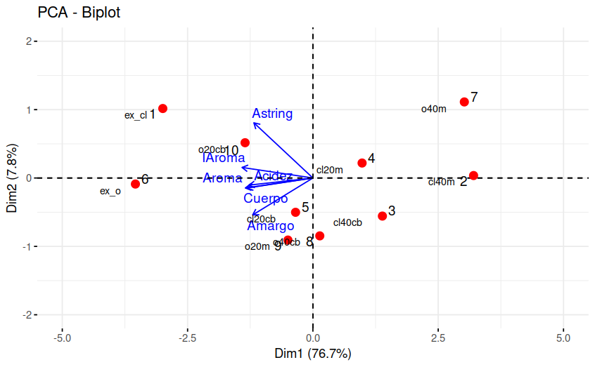

Análisis de Componentes P^rincipales
Modelos Estadísticos para la toma de decisiones
Conceptos
Introducción
Este análisis consiste en describir la variación producida por las observaciones de \(p\) variables aleatorias, mediante un conjunto de nuevas variables que estan correlacionadas entre si, denominadas componentes y que estan conformadas por combinación lineal de las variables originales.
Se utiliza como complemento de los análisis descriptivos y para contribución en modelos predictivos, reduciendo el número de variables empleadas en el modelo.
Las nuevas variables se obtienen en orden de contribución a la variabilidad total de los datos, tal forma que el primer componente describe la mayor cantidad de la variación total del conjunto de variables originales. El segundo componente principal se elige de tal forma que explique la mayor cantidad de la variación total del conjunto de datos que resta sin explicar por el primer componente, bajo la condición de ser independiente de la primera componente y así sucesivamente.
La matriz de datos: es una matriz de \(n \times p\) que contiene los datos originales, donde \(n\) es el número de observaciones y \(p\) es el número de variables.
La matriz de covarianza: es una matriz cuadrada de \(p \times p\) que muestra la relación entre las diferentes variables del conjunto de datos.
Los autovalores y autovectores: son los componentes principales del análisis y se utilizan para transformar los datos originales en un nuevo conjunto de datos que contiene menos variables.
La varianza explicada: indica la cantidad de varianza en los datos originales que es explicada por cada componente principal.
La carga de las variables: indica la contribución de cada variable a cada componente principal.
El gráfico de dispersión: es una representación visual de los datos transformados en el nuevo espacio de componentes principales. Este gráfico permite identificar patrones o agrupaciones en los datos que pueden no haber sido evidentes en el espacio original de las variables.
Las componente se pueden representar por \(CP1\), \(CP2\), \(CP3\) \(\dots\) construidas a partir de un conjunto de \(p\) variables, de forma que:
\[V[CP_1] > V[CP_2] > V[CP_3] > \dots > V[CP_p]\] y \(Cor[CP_i, CP_j] = 0\) para todo para de componentes \(i \neq j\)
El objetivo principal del ACP es poder ver si las dos o tres primeras componentes explican la mayor parte de la variación de las \(p\) variables iniciales. Si es así se pueden considerar estas dos componentes, reduciendo la dimensión de los datos y considerar su representación gráfica.
Nota
Los procedimientos anteriores están soportados en el supuesto de que las \(p\) variables son una combinación lineal de un base que se desea encontrar.
Principales conceptos
Matriz de datos
Los datos conforman una matriz de dimensión \(n \times p\) que contiene los datos originales, donde \(n\) corresponde al número de observaciones y \(p\) el número de variables.
Matriz de covarianza- covarianzas
Matriz cuadrada de dimensión \(p \times p\) que contiene las covarianzas entre pares de variables \(Cov[X_i,X_j]\) y su diagonal está conformada por las varianza de las variables \(V[X_i]\)
Autovalores y autovectores
A parir de la matriz de varianza covarianzas son calculados sus valores propios que representan la cantidad de la varianza de la data explicada por cada componente principal, mientras que los vectores propios de la misma matriz, indica la dirección y fuerza de la relación entre las variables y la de los componentes principales.
Varianza explicada
Indica la cantidad de varianza de los datos que es explicada por cada componente principal.
Carga de las variables
Indica la contribución de cada variable a cada componente principal. Dependiendo su valor puede sugerir un nombre para el componente que facilite la interpretación de los resultados obtenidos.
Gráfico de dispersión
Representación visual de los datos transformados (componentes principales) en un nuevo espacio por lo general de \(R^2\). Este gráfico permite identificar patrones o agrupaciones en los datos que pueden no haber sido evidentes en el espacio original de las variables.
Determinación de los componentes
El primer componente tiene la forma :
\[CP_{1} = \beta_{11}X_1+ \beta_{12}X_2 + \dots + \beta_{1p}X_{p} = \displaystyle\sum_{i=1}^{p} \beta_{1i} X_{i} = b'_{1}X\]
Donde \(b'= (\beta_{11}, \beta_{12}, \dots , \beta_{1p})\) es el vector de coeficientes a estimar y \(X'\) el vector de variables \((X_1, X_2, \dots, X_p)\) que conforma la data.
Para determinar la porción de la varianza total de la data explicada por el componente se define \(\Sigma\) matriz de Varianzas-covarianzas
\[ \Sigma = \begin{equation} \left( \begin{array}{cccc} \sigma^2_1 & \sigma_{12} & \cdots & \sigma_{1p} \\ \sigma_{21} & \sigma^2_2 & \cdots & \sigma_{2p} \\ \vdots & \vdots & \ddots & \vdots \\ \sigma_{p1} & \sigma_{2p} & \cdots & \sigma^2_p \end{array} \right) \end{equation} \]
Enconces la varianza del primer componente será :
\[V[CP_1] = V[b'_1 X] = b'_1 \hspace{.1cm}\Sigma \hspace{.1cm} b_1\]
Bajo la restricción :
\[\beta_{11}^2 + \beta_{12}^2 + \dots + \beta_{1p} = b'_1 \hspace{.1cm}b_1= 1\]
La solución a este sistema se obtiene mediante el método matemático Multiplicadores de Lagrange que maximiza el valor \(\lambda_1\) para la siguiente función :
\[b'_1 \hspace{.1cm}\Sigma \hspace{.1cm}b_1 - \lambda_1 (b'_1 \hspace{.1cm} b_1-1) \]
Dando como resultados:
\[CP_1 = b'_1 X\]
El segundo componenete estará determinado por una segunda ecuación de Lagrange con la que se obtiene:
\[CP_2 = b'_2X\]
La varianza total de las \(p\)
\[\displaystyle\sum_{i=1}^p V[X_i] = \sum_{i=1}^p V[CP_i] = \displaystyle\sum_{i=1}^p \lambda_{i}\]
De tal forma que la contribución total por cada componente se estimará como:
\[\dfrac{\lambda_{i}}{\displaystyle\sum_{i=1}^p \lambda_{i}}\]
Ahora, la contribución de los primeros tres componentes estará dado por :
\[\dfrac{\lambda_{1} + \lambda_2 + \lambda_3}{\displaystyle\sum_{i=1}^p \lambda_{i}}\]
Ejemplo
library(paqueteMOD)
data("creditos")
creditosZ= scale(creditos)
prcomp(creditos[,2:5])Standard deviations (1, .., p=4):
[1] 2.666604e+06 6.864610e+05 1.446571e+01 5.909943e+00
Rotation (n x k) = (4 x 4):
PC1 PC2 PC3 PC4
antiguedad -2.145818e-06 -1.539328e-06 -6.504715e-01 -7.595306e-01
edad -1.713297e-06 -1.730520e-07 -7.595306e-01 6.504715e-01
cuota -1.074701e-01 -9.942083e-01 1.416024e-06 1.105868e-06
ingresos -9.942083e-01 1.074701e-01 2.559740e-06 3.988255e-07Elección del número de componentes principales
library(paqueteMOD)
data("creditos")
creditosZ= scale(creditos)
res.pca <- prcomp(creditos[,2:5])
fviz_eig(res.pca, addlabels = TRUE)
En este caso el primer componente principal explica el 93.8% de la variabilidad contenida en la base de datos y entre los dos primeros casi el 100% de los datos, lo cual indicaría que con solo una variable (CP1) que se obtiene mediante una combinación lineal de las variables se puede resumir la base de datos.
fviz_pca_var(res.pca,
col.var = "contrib", # Color by contributions to the PC
gradient.cols = c("#FF7F00", "#034D94"),
repel = TRUE # Avoid text overlapping
)
Al visualizar las variables en el plano de los componentes principales permite identificar el sentido y la caracterización de los componentes (caracteristica capturada por los vectores propios de \(\Sigma\)). En este ejercicio el primer componente principal está asociado principalmete con la variable ingresos , mientras que el segundo componente se puede asociar a la variable cuota
Para explicar el sentido de los ejes, se escogen cuatro casos extremos conformados por los siguientes clientes
datos<- rbind(creditos[98,],
creditos[299,],
creditos[6,],
creditos[190,])
datos <- as.data.frame(datos)
rownames(datos) = c("Cliente 098","Cliente 299","Cliente 006","Cliente 190")
datos default antiguedad edad cuota ingresos
Cliente 098 0 27.358904 74.30685 170024 20924813
Cliente 299 0 11.769863 45.08219 727995 848487
Cliente 006 1 6.605479 44.87945 3517756 2710736
Cliente 190 0 27.780822 53.96164 103855 12303025casos1 <- rbind(res.pca$x[98,1:2],res.pca$x[299,1:2])
rownames(casos1) = c("98","299")
casos1 <- as.data.frame(casos1)
casos2 <- rbind(res.pca$x[6,1:2], res.pca$x[190,1:2])
rownames(casos2) = c("6","190")
casos2 <- as.data.frame(casos2)
fviz_pca_ind(res.pca, col.ind = "#DEDEDE", gradient.cols = c("#00AFBB", "#E7B800", "#FC4E07")) +
geom_point(data = casos1, aes(x = PC1, y = PC2), color = "red", size = 3) +
geom_point(data = casos2, aes(x = PC1, y = PC2), color = "blue", size = 3)
El cliente 098 presenta altos ingresos (\(20924813\)), mientras que el cliente 299 que se encuentra ubicado al otro extremo presenta bajos ingresos ( \(848487\)). Esto muestra el sentido en que aumentan los valores del primer componente principal (Dim1). Aun más dado que el primer componente no solo está conformado por la variable ingresos, sino que se trata de una combinación lineal de todas las variables donde se destaca (presenta mayor pesos) los ingresos se puede analizara que mientras el cliente 098 presenta una realción cuota/ingresos de \(170024/20924813 = 0.008125473\) , el cliente 299 que se encuentra al otro extremo de la recta presenta una relación \(727995/848487 = 0.8579919\)
Lo mismo ocurres al comparar el clientes 006 (cuota = \(3517756\)) con cliente190 (cuota = \(103855\))
datos<- rbind(creditos[98,],
creditos[293,],
creditos[6,],
creditos[190,])
datos# A tibble: 4 × 5
default antiguedad edad cuota ingresos
<dbl> <dbl> <dbl> <dbl> <dbl>
1 0 27.4 74.3 170024 20924813
2 0 3.52 35.0 161412 3093808
3 1 6.61 44.9 3517756 2710736
4 0 27.8 54.0 103855 12303025fviz_pca_biplot(res.pca, repel = TRUE,
col.var = "#034A94", # Variables color
col.ind = "#DEDEDE" # Individuals color
)
Ejemplo
Para el ejemplo en R se utilizarán las librerias ade4 y
factoextra. A continuación se presenta la matriz de datos
de distintos tipos de café y seis variables en puntajes de \(0\) a \(10\) de algunas caracteristicas que definen
la calidad de estos.
library(ade4); library(factoextra)
data("cafe")Calculando el ACP mediante la libreria ade4 se
tiene:
library(ade4)
p = ncol(cafe)
n = nrow(cafe)
ACP = dudi.pca(cafe[,2:7], scannf=FALSE, center = TRUE, scale = TRUE, nf=p)Mediante los argumentos center = TRUE, scale = TRUE
estamos normalizando los datos originales.
Los valores propios asociados a la matriz de correlaciones serán:
ACP$eig[1] 4.60147661 0.46937103 0.38451212 0.34461612 0.14487978 0.05514434Como vemos el primer valor propio será siempre el mayor ya que es el
que mayor varianza logra explicar.
Las componentes principales de los individuos son:
ACP$li Axis1 Axis2 Axis3 Axis4 Axis5 Axis6
1 -2.9947077 1.01622318 0.6088641 -0.03785795 0.02866881 0.18511122
2 3.2057321 0.03615753 0.7806676 -0.07003494 -0.09122485 -0.22696752
3 1.3866259 -0.55662815 0.6612540 -0.18398706 -0.03470995 -0.06223661
4 0.9814076 0.21905587 -1.0260987 -1.39279259 0.15092805 0.05010482
5 -0.3457128 -0.50136938 0.4641112 -0.41096544 -0.57540901 0.13120929
6 -3.5409698 -0.08826572 0.2660512 -0.09933568 0.28882042 0.01645509
7 3.0213005 1.11233544 -0.1516589 0.64680223 0.28754799 0.20819208
8 0.1375515 -0.84616260 -0.7108259 0.72170121 -0.32801652 0.36384152
9 -0.4982973 -0.90730984 -0.1613885 0.35575388 0.75859223 -0.18371900
10 -1.3529300 0.51596367 -0.7309759 0.47071634 -0.48519716 -0.48199090Y por último las componentes principales de las variables son:
ACP$co Comp1 Comp2 Comp3 Comp4 Comp5
IAroma -0.9594169 0.10472444 0.006052845 -0.15371519 -0.097171463
Aroma -0.9144779 -0.09905878 -0.245477287 0.04789976 0.301769522
Cuerpo -0.8891227 -0.09880354 -0.389613549 0.00138818 -0.201486279
Acidez -0.8667067 -0.07067830 0.274819022 -0.39762926 0.035161005
Amargo -0.8151809 -0.36599671 0.289897844 0.33905502 -0.049737315
Astring -0.7990534 0.54761303 0.113364062 0.21359800 0.008113424
Comp6
IAroma 0.188267462
Aroma 0.017298649
Cuerpo -0.085447344
Acidez -0.094621441
Amargo 0.007324156
Astring -0.055608952Podemos representar mediante un diagrama de barras a los valores propios del ACP.
library("factoextra")
fviz_screeplot(ACP, addlabels = TRUE)
Se evidencia que la primera componente se lleva el 76.7% de la
inercia total, seguida de la segunda componente con un 7.8% de la
varianza explicada, de esta forma el porcentaje de inercia representado
en el primer plano factorial es del 84.5%, perdiendo tan solo un 15.5%
de la información.
Graficando las dos primeras componentes de las variables obtenemos el circulo de correlaciones:
library("factoextra")
fviz_pca_var(ACP, repel = TRUE, col.var = "blue")
Se puede observar que todas las variables son bastante excentricas, por lo que cuentan con una buena calidad de la representación mediante el ACP, podemos ver que las variables que más correlacionadas están son Amargo, Aroma, Cuerpo y Acidez, siendo las variables Astring y Amargo las que menos correlacionadas están entre si. La flecha a donde apunta la variable indica la dirección para donde la variable aumenta.
Podemos entonces realizar la representación simultanea de individuos y variables para poder caracterizar los tipos de café:

Recordemos que las variables están en puntajes. En este caso se puede decir que el tipo de café con la mejor calidad es el ex_o, caracterizándose más por el Aroma, Acidez y el cuerpo. Seguido de este se encuentra el ex_cl, el cual tiene buena puntuación en todas las variables pero se caracteriza más por la astringencia y el aroma. Los cafés con peor calidad son los que se encuentran en dirección contraria a las variables, siendo estos o40m, cl40m, cl20m y cl40cb. Por otra parte tenemos a cl20cb, o40cb y o20m tipos de café con calidad promedio.
Obteniendo las contribuciones a la varianza total de las componentes principales se tiene:
library("factoextra")
inercia.ACP = inertia.dudi(ACP,row.inertia=TRUE, col.inertia=TRUE)
inercia.ACP$tot.inertia inertia cum cum(%)
Ax1 4.60147661 4.601477 76.69128
Ax2 0.46937103 5.070848 84.51413
Ax3 0.38451212 5.455360 90.92266
Ax4 0.34461612 5.799976 96.66626
Ax5 0.14487978 5.944856 99.08093
Ax6 0.05514434 6.000000 100.00000Podemos observar que hasta la segunda componente (Ax2) se acumula un 84.51% de la inercia total.
Las contribuciones de las variables a la varianza explicada de cada componente será:
inercia.ACP$col.abs Axis1 Axis2 Axis3 Axis4 Axis5 Axis6
IAroma 20.00403 2.336575 0.009528159 6.856429e+00 6.51732976 64.27610524
Aroma 18.17394 2.090594 15.671573296 6.657806e-01 62.85545355 0.54265446
Cuerpo 17.18012 2.079834 39.478266260 5.591856e-04 28.02097007 13.24024917
Acidez 16.32477 1.064280 19.641902322 4.587975e+01 0.85332558 16.23596585
Amargo 14.44145 28.538956 21.856465870 3.335837e+01 1.70748498 0.09727789
Astring 13.87568 63.889761 3.342264093 1.323911e+01 0.04543605 5.60774737Siendo la variable IAroma la que más contribuye a la
varianza explicada por el primer eje (20%), mientras que
Astring es la que más contribuye al segundo eje
(63.8%).
Por último podemos estudiar las contribuciones de cada individuo a las componentes principales:
library("factoextra")
inercia.ACP$row.abs Axis1 Axis2 Axis3 Axis4 Axis5 Axis6
1 19.48999241 22.00198737 9.6411901 0.04158901 0.05672983 6.21390373
2 22.33352233 0.02785359 15.8497441 0.14232919 0.57440544 9.34171101
3 4.17850953 6.60106561 11.3717309 0.98228826 0.08315726 0.70241029
4 2.09315612 1.02233565 27.3821959 56.29078571 1.57228815 0.45525842
5 0.25973694 5.35549142 5.6018837 4.90089069 22.85312172 3.12196638
6 27.24879089 0.16598463 1.8408579 0.28633532 5.75768628 0.04910204
7 19.83766803 26.36059855 0.5981716 12.13968540 5.70706576 7.86008865
8 0.04111817 15.25426797 13.1406396 15.11399500 7.42649088 24.00620580
9 0.53960973 17.53860139 0.6773843 3.67251609 39.71997726 6.12078543
10 3.97789584 5.67181382 13.8962018 6.42958532 16.24907743 42.12856826Se observa que el café ex_o (27.2%) es el que más varianza explicada aporta a la primera componente, por otra parte el café o40m (26.3%) es el que más aporta al segundo eje.